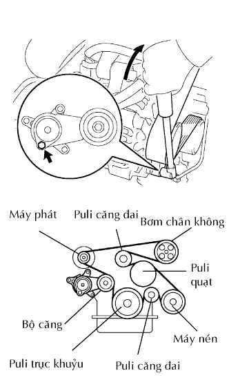

MÁY NÉN VÀ LI HỢP TỪ > LẮP |
| 1. ĐIỀU CHỈNH LƯỢNG DẦU MÁY NÉN |
Khi thay thế máy nén bằng một chiếc mới sau khi xả từ từ ga điều hoa từ van sửa chữa, hãy xả lượng dầu sau đây từ máy nén trước khi lắp vào.
| 2. LẮP CỤM MÁY NÉN ĐIỀU HOÀ |
Lắp máy nén bằng 4 bulông. Hãy xiết chặt các bu lông theo thứ tự như trong hình vẽ.
Nối giắc và lắp kẹp.
| 3. LẮP ĐƯỜNG ỐNG XẢ GA ĐIỀU HOÀ NO.1 |
Tháo bóc băng dính ra khỏi ống mềm.
Bôi đủ dầu máy nén vào gioăng chữ O mới và bề mặt lắp của máy nén.
Lắp gioăng chữ O vào ống xả ga.
 |
Lắp ống xả bằng bu lông.
| 4. LẮP ỐNG HÚT |
Bóc băng dính ra khỏi ống hút.
Bôi đủ dầu máy nén vào gioăng chữ O mới và bề mặt lắp của máy nén.
Lắp gioăng chữ O cho ống hút.
 |
Lắp ống hút bằng bu lông.
| 5. LẮP ĐAI V CHO QUẠT VÀ MÁY PHÁT |
|  |
Lắp dây đai dẫn động vào các puli trừ puli bộ căng đai.
Dùng một chi tiết có hình lục giác được chỉ ra bởi mũi tên trên hình minh hoạ để dịch chuyển puli bộ căng đai xuống và sau đó lắp đai dẫn động lên puli căng đai.
 |
Sau khi đã lắp một dây đai mới, hãy kiểm tra rằng dấu chỉ báo của bộ căng đai nằm trong vùng A như trong hình vẽ.
| 6. NỐI CÁP VÀO CỰC ÂM ẮC QUY |
| 7. TIẾN HÀNH THIẾT LẬP BAN ĐẦU |
Tiến hành thiết lập ban đầu (Xem trang Kích chuột vào đây).
| 8. NẠP GA ĐIỀU HOÀ |
Thực hiện hút chân không bằng bơm chân không.
Nạp ga điều hoà HFC-134a (R134a).
| 9. HÂM NÓNG ĐỘNG CƠ |
Thực hiện hút chân không bằng bơm chân không.
Nạp ga điều hoà HFC-134a (R134a).
| 10. KIỂM TRA RÒ RỈ GA ĐIỀU HOÀ |
Sau khi nạp lại ga điều hoà, chuẩn bị xe để kiểm tra rò rỉ ga với các điều kiện sau đã được thoả mãn.
Tắt khoá điện OFF.
Xe đỗ ở vị trí thông khí tốt và không có khí dễ bay hơi, như hơi xăng hoặc khí xả. Bộ ngửi ga rất nhạy với các khí dễ bay hơi. Nếu phản ứng như trên là không thể tránh khỏi, thì phải kích xe lên.
Còn một ít ga điều hoà trong hệ thống.
Khi tắt máy nén OFF: Xấp xỉ 392 đến 588 kPa (4 đến 6 kgf/cm2).
 |
Kiểm tra rò rỉ ga điều hoà đường ống dẫn ga.
Sau khi môtơ quạt gió ngừng quay, hãy đợi ít nhất 15 phút.
Dùng bộ phát hiện rò rỉ ga, kiểm tra rằng không có rò rỉ trong đường ống điều hoa.
Nếu thấy rò rỉ, hãy xiết chặt các chi tiết hoặc thay các chi tiết bị hỏng cần phải bịt rò rỉ.
 |
Kiểm tra rò rỉ ga điều hoà ở ống xả.
Cầm bộ ngửi rò ga sao cho cảm biến ở phía dưới ống xả như được chỉ ra như trong hình vẽ.
Kiểm tra rằng ga không bị rò ra từ ống xả.
Nếu thấy rò rỉ, hãy xiết chặt các chi tiết hoặc thay các chi tiết bị hỏng cần phải bịt rò rỉ.
Kiểm tra rò rỉ ga điều hoà ở bộ làm mát.
Tháo điều khiển môtơ quạt làm mát ra khỏi bộ làm mát. Hãy cắm cảm biến của bộ ngửi rò ga vào bộ phận.
Kiểm tra rằng khí không rò ra từ bộ làm mát.
Nếu thấy rò rỉ, hãy xiết chặt các chi tiết hoặc thay các chi tiết bị hỏng cần phải bịt rò rỉ.
Kiểm tra rò rỉ ga điều hoà ở công tắc áp suất.
Ngắt giắc công tắc áp suất ra và đợi xấp xỉ 20 phút.
Dùng bộ phát hiện rò rỉ ga, kiểm tra rằng không có rò rỉ từ công tắc áp suất.
Nếu thấy rò rỉ, hãy xiết chặt các chi tiết hoặc thay các chi tiết bị hỏng cần phải bịt rò rỉ.
Lặp lại tất cả các bước trên 2 hoặc 3 lần.